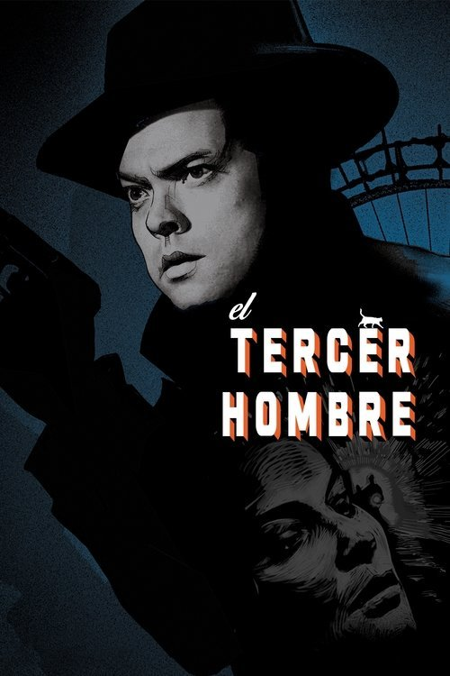

El tercer hombre (1949)
Sinopsis Rápida
En la Viena de la posguerra, un escritor se ve envuelto en una red de engaños y asesinatos al investigar la misteriosa muerte de un viejo amigo. ¿Qué secretos esconde la ciudad, y hasta dónde llegará para protegerlos?
Sinopsis Detallada
El clásico neo-noir "El tercer hombre" nos sumerge en la oscura y desolada Viena posterior a la Segunda Guerra Mundial. Holly Martins, un escritor de novelas baratas, llega a la ciudad buscando a su amigo Harry Lime, solo para descubrir que Lime está muerto. Pero las circunstancias sospechosas de su fallecimiento lo llevan a una espiral de mentiras y traiciones, donde la moral es ambigua y la supervivencia depende de quién confías. Una atmósfera opresiva, una historia llena de giros inesperados y la icónica interpretación de Orson Welles, hacen de esta una obra maestra del cine de suspense.
¿Por qué tenés que verla?
- Una trama magistral llena de giros inesperados que te mantendrá en vilo hasta el final.
- La atmósfera oscura y la icónica banda sonora de Anton Karas crean una experiencia cinematográfica inolvidable.
- Su influencia en el cine posterior es innegable, estableciéndose como un clásico del género.
- La actuación inolvidable de Orson Welles como Harry Lime.
Idea Extra
Análisis de la atmósfera y el simbolismo de la Viena de la posguerra en "El tercer hombre".